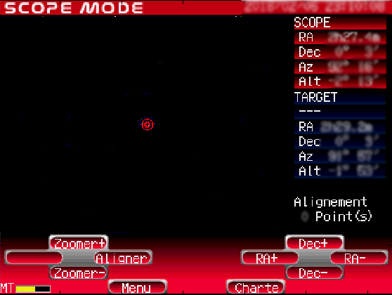

STARBOOK: this is a Matlab class to control the Vixen StarBook for telescope mounts. Compatibility with the StarBook S and StarBook Ten is not guarantied (but may work). Supported Vixen mounts are primarily the SX, SXW and SXD, and Atlux. Other mounts (e.g. GP2, GPD2, SX2, SXD2, SXP, AXD, AXD2) may be partly supported.
This
way you can fully control, and plan the sky observations from your
sofa, while it's freezing outside.
The
mount should have been aligned and configured (date, location,
weighting) before.
The StarBook IP should be read accessing the 'About
STAR BOOK' item, e.g. displayed in the menu at start-up or
accessed with the 'MENU' key.
Then use e.g.:
>> sb = starbook('169.254.1.1');
to
establish the connection and display the StarBook screen. When the
IP is not given, a dialogue shows up.
The buttons are active in a similar way to the physical ones. The mouse wheel allows to zoom in/out, and the display is regularly updated (5 sec). You can access more actions from the top menu.

If the StarBook image can not be
retrieved (e.g with a StarBook
S and StarBook
Ten), a static image is used, and buttons are active as
RA+/RA-/DEC+/DEC- (arrows on the right) and ZOOM+/ZOOM- (up/down
arrows on the left).
You
may as well control the StarBook programmatically, using
the methods below with the 'sb' object. To close the StarBook
image in this case you may use
>> close(sb)
Other minor commands
>> help starbook.move
Matlab, no external toolbox. A Vixen StarBook controller for SX-type mounts.
Just copy the files. Then type commands above.
Limitations: The StarBook S and StarBook Ten may be partly supported (the screen image is not handled).
We
recommend to install as well:
urldownload : version 1.0 (9.81 KB) by Jaroslaw Tuszynski, 23 Feb 2016
rubytelescopeserver: Rob Burrowes 2013